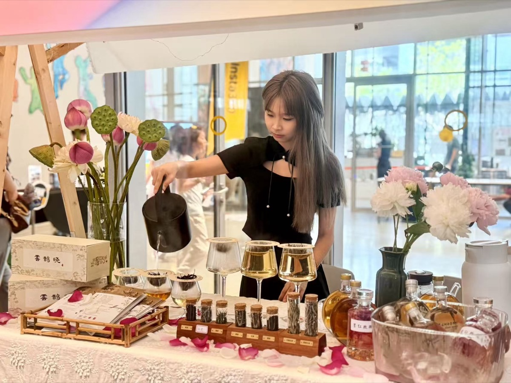
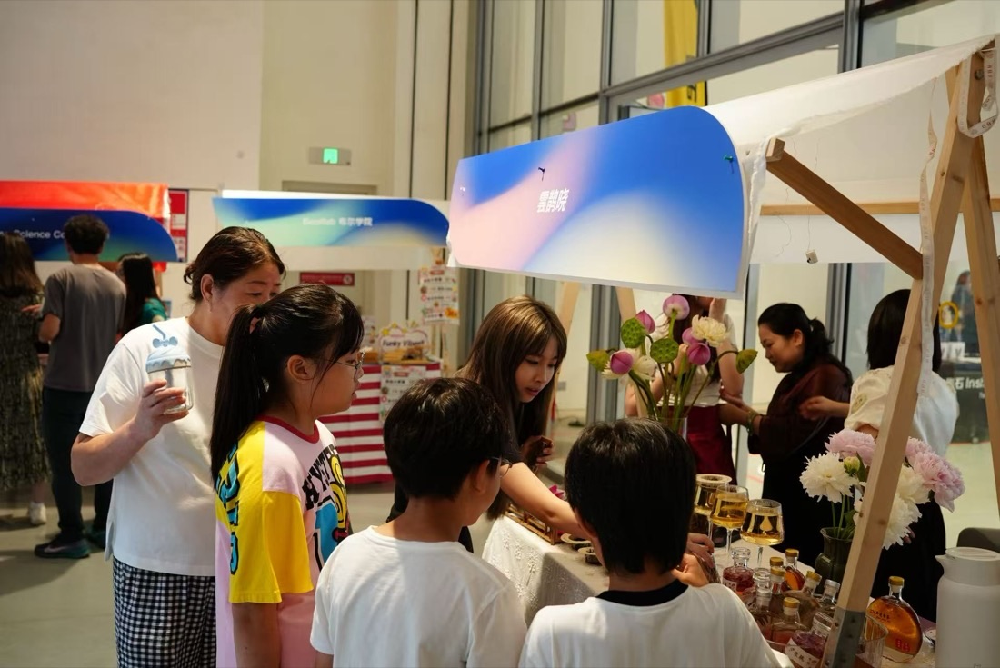
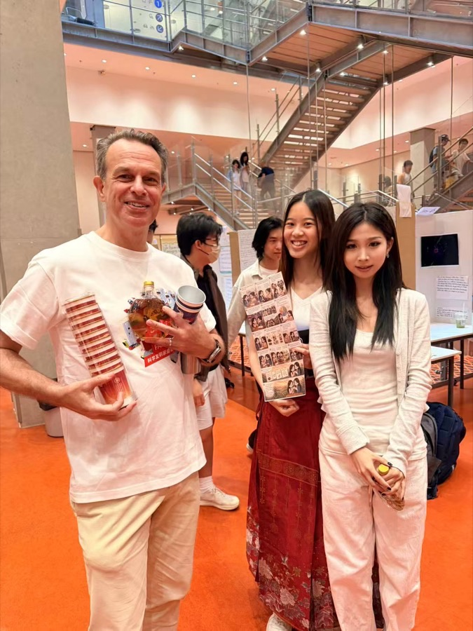
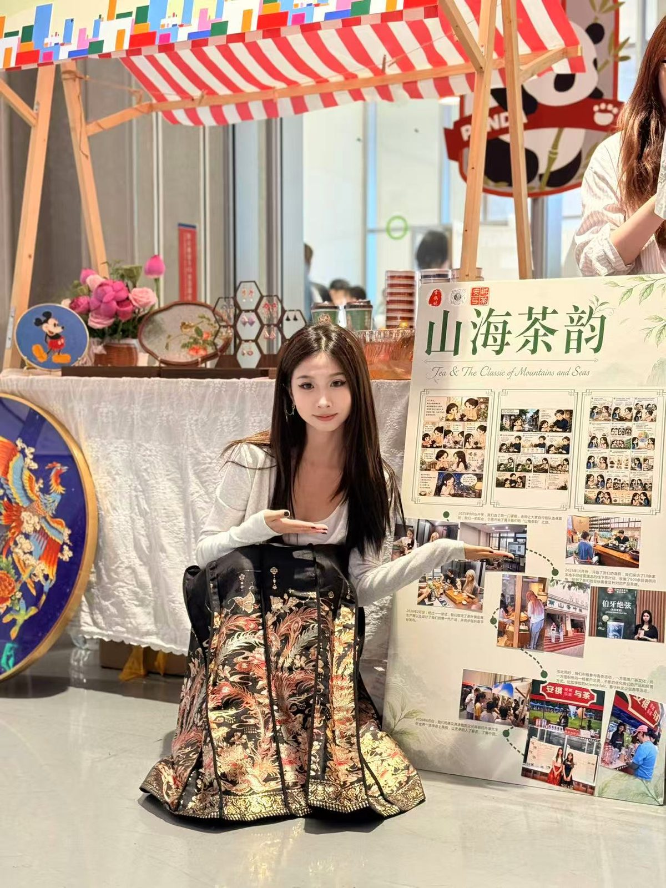
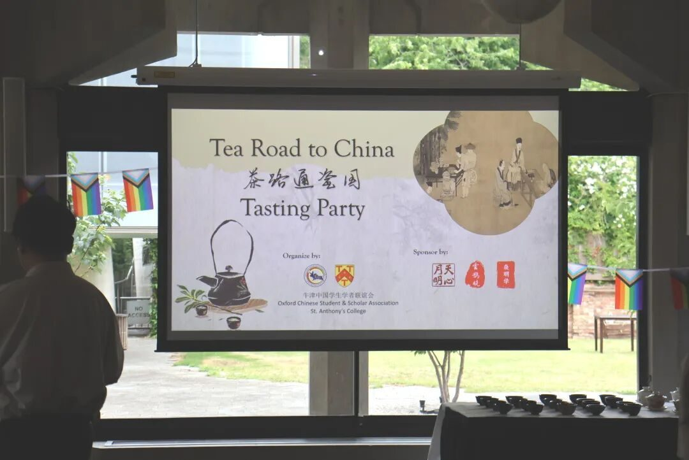
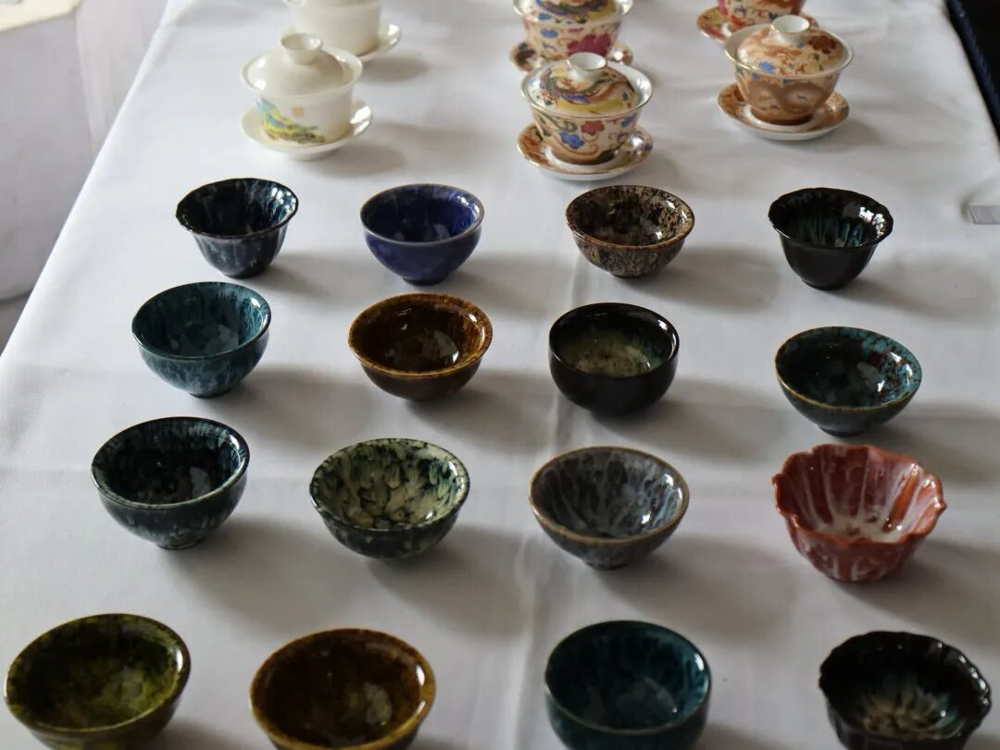
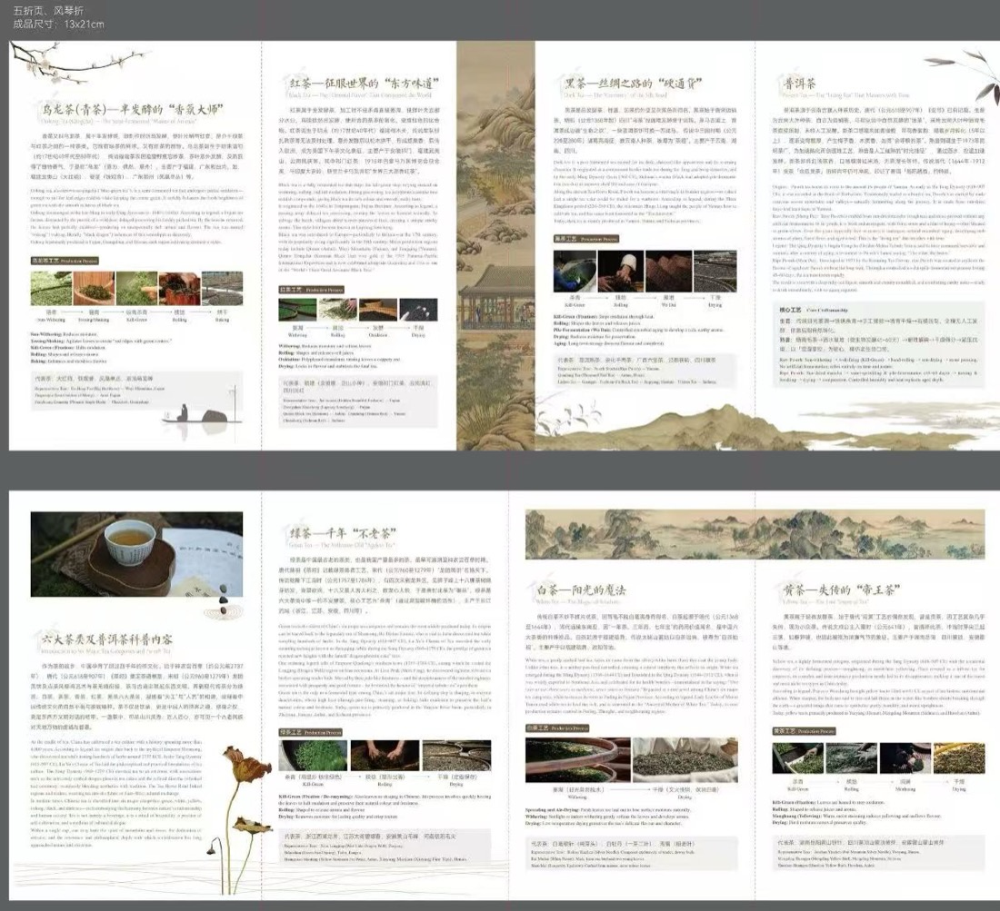
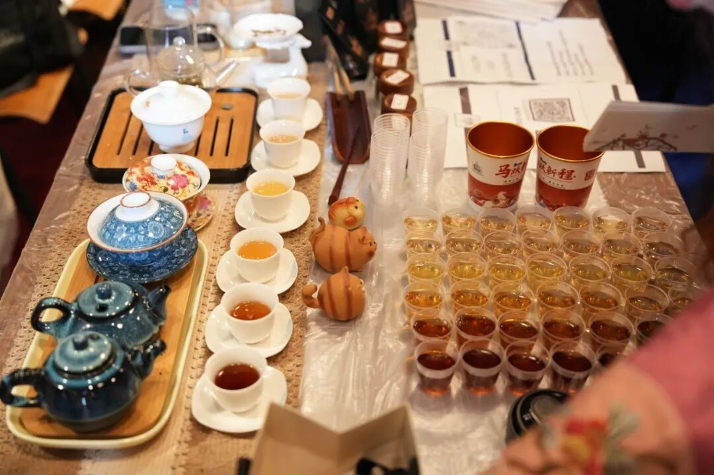
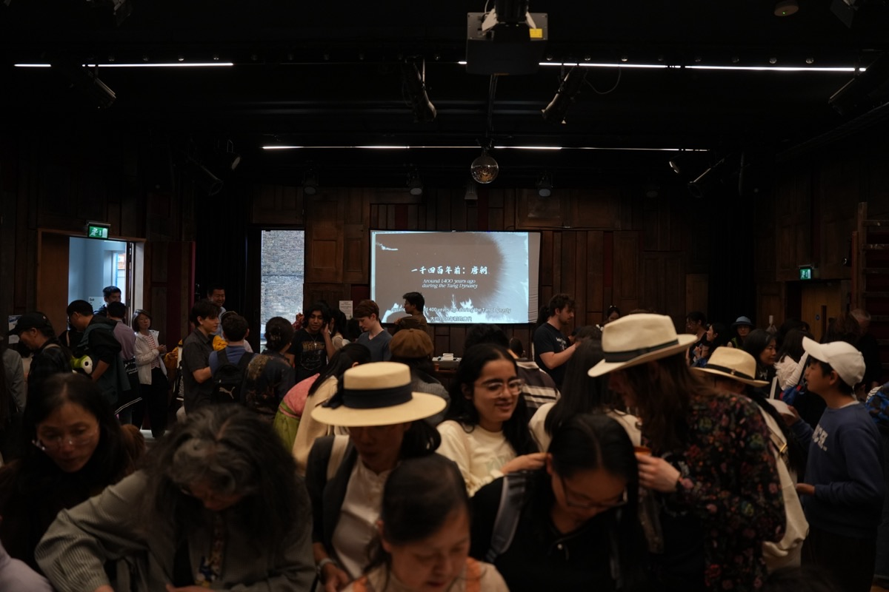
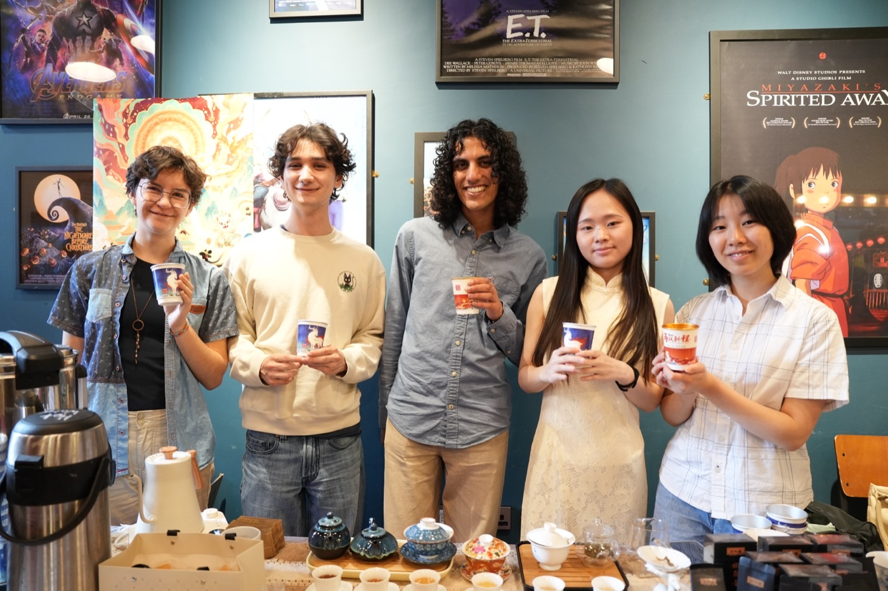

校园与牛津
从校门到牛津的茶席CAMPUS & OXFORD
校内的摊位练手，校外的舞台发声——同一套「先被看见」的方法，从深圳的课堂一路用到了牛津。





三场牛津茶会WITH OXCSSA & OUTAS
茶路通瓷国 3.0
在牛津大学 St. Anthony's College 开讲，现场座无虚席。我们设计六大茶类科普手册、把茶样从深圳寄到牛津，在读的姐姐们现场冲泡。
如「月」而至 · 中秋茶会
与牛津学联 OXCSSA × 牛津品茶协会 OUTAS 共办中秋主题文化活动，把团圆的味道带进课本之外的课堂。
端午游园会 · 新品发布
协助学联制作宣传短片，与「雲鹊晓」同列学联官方致谢合作伙伴；数百位来宾涌入牛津 The Story Museum，瑞兽杯茶在此首次亮相。





